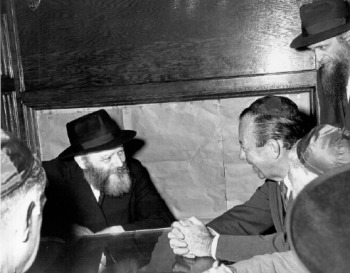
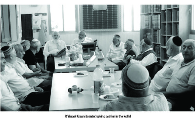

When News of the Yom Kippur War Reached Crown Heights
…the Syrian and Egyptian armies had suddenly attacked from the north and the south. He was agitated and emotionally overwrought, and said that the Rebbe was surely immersed in his prayers and did not know what was going on while the Jews in Eretz Yisroel needed a great salvation.

Back then, forty years ago, he was a young man, a typical Israeli who had just completed his army service where he served in the Combat Engineering Corps He spent three years manning posts on the banks of the Suez Canal.
Just one week before the war began, he went to New York. After finishing his army service he wanted a vacation. Like many of his friends, he packed his bags and took a flight to New York.
“I came with a little money and some clothes and hoped things would work out.”
Krauni happened to meet an Israeli, a Lubavitcher, who lived in Crown Heights and who was happy to host him.
“I was pleasantly surprised by this hospitality since we did not know one another, but it was enough for him that I am a Jew. He met me on the street and asked me whether I had a place to stay. When I said no, he invited me to his home.”
On Yom Kippur, Krauni met a local gentile who told him that a war had broken out in Israel.
“At first, I did not believe him. I had just been there a week before and all was quiet. Nobody believed that anyone would dare to attack Israel. I sat at posts near the Canal and with my binoculars I could see the whites of the Egyptians’ eyes. It did not look as though they planned on attacking us on such a scale.”
RUNNING TO 770
Minutes later, he met another Israeli who was staying in the neighborhood too and he repeated what the Gentile had told him. This man said that the Syrian and Egyptian armies had suddenly attacked from the north and the south. He was agitated and emotionally overwrought, and said that the Rebbe was surely immersed in his prayers and did not know what was going on while the Jews in Eretz Yisroel needed a great salvation.
“I tried to dissuade him but he was determined and off he ran, with me quickly following him. The sight in 770 was impressive, with masses of Chassidim dressed in white and the Rebbe in his place, praying before G-d. That Israeli did not care who was in the way; he made a beeline for the Rebbe. I followed right behind him.
“He reached the front of the shul and was about to go up the steps leading to the Rebbe when one of the secretaries, a thin man with a small beard, blocked him. Later I was told it was R’ Binyamin Klein. He firmly asked him what he wanted and the man told him about the war that had begun in Eretz Yisroel. The secretary asked him not to go up the steps and reassured him by saying that he would soon go up himself and inform the Rebbe.
“At that moment, in front of everyone, the Rebbe turned around to the crowd and moved his hand from up to down in a gesture of dismissal. Later, I heard that the Rebbe said: I know already.
“The Rebbe did not appear worried; on the contrary, he looked calm and confident. We left the shul and waited for Yom Kippur to end so we could hear the news.
“The news we heard later was not encouraging. We had been attacked and caught unprepared and it was feared that this war would not end as did the Six Day War.”
Many of Krauni’s friends who were in Eretz Yisroel were drafted immediately. As a patriot, he wanted to take the next plane out so he could join his unit.
“My Lubavitcher host begged me not to do anything without asking the Rebbe for a bracha. I wrote a letter about my desire to return to Eretz Yisroel immediately. I also included the names of some of my friends whom I knew had been drafted. I asked the Rebbe to pray that they return safely.
“The answer, received that same day, was written on my letter. The secretary showed me where the Rebbe had written and explained the answer: As far as flying, the Rebbe said not to change my plans, i.e. not to leave. The Rebbe also marked the names I had submitted for a bracha and wrote that he would pray for them at his father-in-law’s grave.
“The secretary pointed out that one of the names was not included in the Rebbe’s bracha. I did not know what this signified.
“I wasn’t a Chassid at the time and I was barely religious. I considered the Rebbe telling me not to leave merely a recommendation. I wanted to leave for the airport but the people I was staying with did not let me go. I was later able to thank them for this, because within a short time I understood how prophetic the Rebbe was.
“I found out that the friend the Rebbe had excluded from his bracha had been killed on the first day of the war. At that point, even his parents did not know about this. A few days went by before those who bring back the casualties were able to do so, but the Lubavitcher Rebbe in Brooklyn knows what is going on with every Jew. When things clicked in my mind, I shuddered and began to comprehend that the Rebbe is not just another rabbinic figure, but a man of G-d.
“It’s not that I became a Chassid; my getting more involved with religion was a slow process. But I began going to 770 more often and committed to doing mitzvos that I hadn’t done before.”
IN YECHIDUS 
“When Tishrei was over, my hosts arranged a private meeting for me with the Rebbe. I had some questions regarding my wife-to-be. We had met a while before and I asked the Rebbe if she was my intended wife. The Rebbe said yes and blessed us to establish a Jewish home. This bracha has stood by us and we are now happily married for forty years.
“In that encounter with the Rebbe, I noticed that there was a large pile of papers on the desk. I was amazed when the Rebbe was able to pull out the paper I had submitted to him and he answered all my questions.”
***
After a year and a half, Krauni returned to Eretz Yisroel and married. The couple settled in Yavne. He says that although he did not take on a life of Torah and mitzvos all at once, he owes the entire process and where he is at today to the Lubavitcher Rebbe. “What I saw there was absolutely incredible.”
Twenty years ago he founded the kollel “Oz V’Hadar” which he runs. “We have a group of twenty men who learn here and we provide for their needs.”
Krauni only has the highest praise for the work of the shliach in his city, R’ Lerer, whom he calls a close friend. “When he came to this city, our kollel was his first stop and the Chabad house activities were launched from the kollel.”
Nosson Avrohom. "When News of the Yom Kippur War Reached Crown Heights." Beis Moshiach, no. 907 (December 17, 2013).